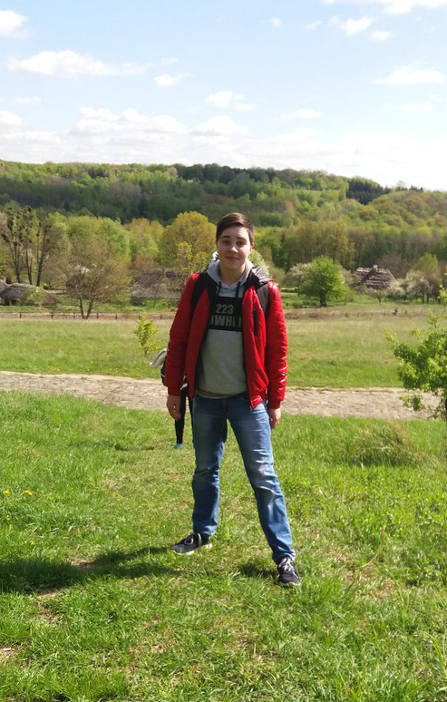

Чарівна дівчина, яка тре всім носа на міських, та обласних олімпіадах. Тільки того року вона здобула друге місце в Малій Академії Наук з фаху "Російська мова". Вже в 15 років вона має перемоги на олімпіадах з української і російської мови. Яцика, Шевченка, рік за роком вона показує, хто насправді найкращий!

Музика... яка ж це потужна сила, а володіти нею це просто мати все в житті. Богдан, його мелодію, яка виходить з-під струн, просто чарує, і розслабляє. До цього ж всього, Богдан призер багатьох музичних конкурсів!!! 17-та школа та музична пишається таким учнем!

Видатна танцюристка, яка примушувала серця радіти, коли виконувала рухи на сцені. Даша майже не тяне весь гурток за собой. Правду казали, що вона майбутня зірка цього мистецтва, мистецтва хореографії. На її рахунку вже багато перемог, сертифікатів, грамот, та поїздок у різні міста та країни!!!